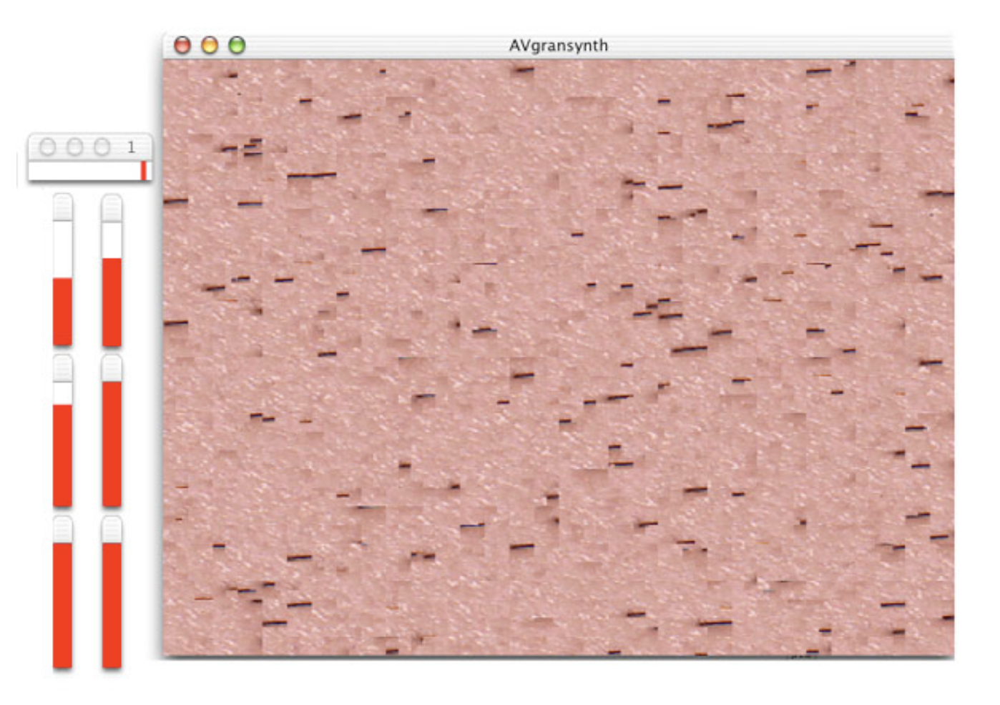

Research
In 2003-4 I attended Parsons School of Design and earned an MFA in Design and Technology. I was lucky enough
to study with some amazing folks, including Golan Levin and
Zach Lieberman.

M thesis, entitled Audiovisual Granular Synthesis for Composition and Performance, presents a novel
system for pairing audio and visual signals in the context of granular synthesis. This was the first thesis
to present this idea. You can find the full text of my thesis in PDF format here.